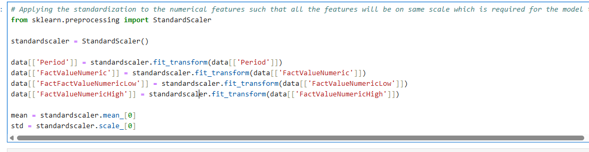
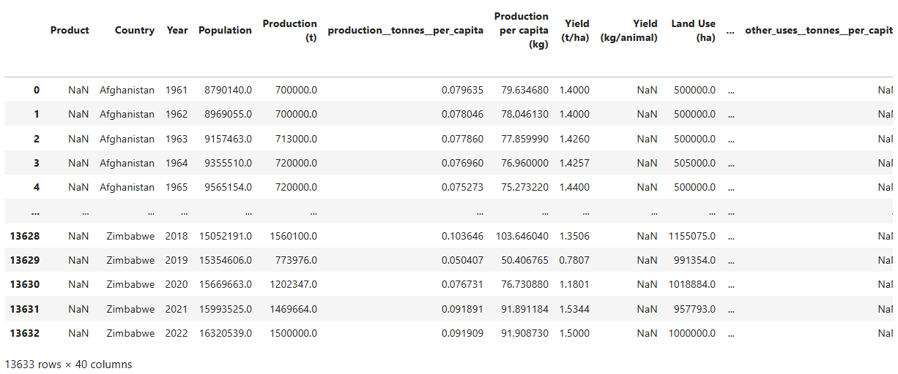

1. Handling Missing Values:
These are null values in the dataset. They impact machine learning results and statistical analysis, leading to biased estimates. This occurs due to data collection issues or entry mistakes.
In this project, we handle them using SimpleImputer from scikit-learn. We replace missing values of numerical variables with the mean. We replace missing values of categorical variables with the most frequent item. We can also remove entire columns or rows that contain all null values.
2. Encoding:
Encoding transforms categorical variables into numerical formats. Many algorithms can only process numerical input.
In this project, we use LabelEncoder from scikit-learn. Each category is assigned a unique integer value. For example, location names like India, USA, and New Zealand become 1, 2, and 3, respectively.
3. Standardization:
This scales all numerical features. It ensures all features contribute equally to the analysis.
In this project, we use StandardScaler from scikit-learn for standardization.
4. Dimensionality Reduction:
This reduces the number of features while retaining information. It helps with computational costs and improves model performance.
In this project, we use Random Forest regressor from scikit-learn. It calculates the importance of each feature based on how it reduces impurity when used for prediction.
5. Removing Outliers:
Outliers are observations that lie outside the majority range. They can skew analysis and lead to misleading conclusions.
We use the Interquartile Range (IQR) technique to detect and remove outliers. IQR = Q3 - Q1, where Q3 is the median of the first half and Q1 is the median of the second half.
Points below Q1 - 1.5 * IQR and above Q3 + 1.5 * IQR are treated as outliers.
1. Healthcare Dataset
Before Preprocessing
After Preprocessing
2. Agriculture Dataset
Before Preprocessing
After Preprocessing
3. Environment Dataset
Before Preprocessing
After Preprocessing
4. Weather Dataset
Before Preprocessing
After Preprocessing
5. Market Dataset
Before Preprocessing
After Preprocessing